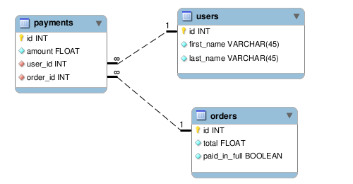
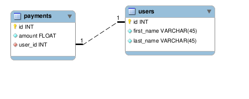
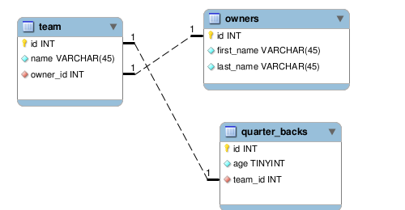

What are associations? By declaring associations on your models, you allow them to communicate with each other. These associations should match the way data in your tables relate to each other.
These are available amongst each type of association.
conditions: string/array of finder conditions
readonly: whether associated objects can be saved/destroyed
select: specify fields in the select clause
class_name: the class name of the associated model
foreign_key: name of foreign_key
Let's take a look at these options with a few different association types
Below, we specify that associated payments of an order object should not be void.
1 class Order extends ActiveRecord\Model {
2 static $has_many = array(
3 array('payments', 'conditions' => array('void = ?' => array(0)))
4 );
5 }
If you add a readonly option to your association, then the associatied object cannot be saved, although, the base object can still be saved.
1 class Payment extends ActiveRecord\Model {
2 static $belongs_to = array(
3 array('user', 'readonly' => true)
4 );
5 }
6
7 $payment = Payment::first();
8 $payment->paid = 1;
9 $payment->save(); # this will save just fine
10
11 $payment->user->first_name = 'John';
12 $payment->user->save(); # this will throw a ReadOnlyException
Sometimes you may not need all of the fields back from one of your associations (e.g. it may be a ridiculously large table) and so you can specify the particular fields you want.
1 class Payment extends ActiveRecord\Model {
2 static $belongs_to = array(
3 array('person', 'select' => 'id, first_name, last_name')
4 );
5 }
In this example payment has a one-to-one relationship with a user, but we want to access the association thru "person." Thus, we have to provide the class name of the associated model; otherwise, ActiveRecord would try to look for a "Person" class.
1 class Payment extends ActiveRecord\Model {
2 static $belongs_to = array(
3 array('person', 'class_name' => 'User')
4 );
5 }
A one-to-many relationship. You should use a pluralized form of the associated model when declaring a has_many association, unless you want to use the class_name option.
1 # one-to-many association with the model "Payment"
2 class User extends ActiveRecord\Model {
3 static $has_many = array(
4 array('payments')
5 );
6 }
7
8 $user = User::first();
9 print_r($user->payments); # => will print an array of Payment objects
10
11 $payment = $user->create_payment(array('amount' => 1)); # build|create for associations.
Options (not part of common options)
limit/offset: limit the number of records
primary_key: name of the primary_key of the association (assumed to be "id")
group: GROUP BY clause
order: ORDER BY clause
through: the association used to go "through"
1 class Order extends ActiveRecord\Model {
2 static $has_many = array(
3 array('payments', 'limit' => 5),
4 array('items', 'order' => 'name asc', 'group' => 'type')
5 );
6 }
This is a convenient way to configure a many-to-many association. In this example an order is associated with users by going the its payments association.
1 class Order extends ActiveRecord\Model {
2 static $has_many = array(
3 array('payments'),
4 array('users', 'through' => 'payments')
5 );
6 }
7
8 class Payment extends ActiveRecord\Model {
9 static $belongs_to = array(
10 array('user'),
11 array('order')
12 );
13 }
14
15 class User extends ActiveRecord\Model {
16 static $has_many = array(
17 array('payments')
18 );
19 }
20
21 $order = Order::first();
22 # direct access to users
23 print_r($order->users); # will print an array of User object

This indicates a one-to-one relationship. Its difference from has_one is that the foreign key will be on the table which declares a belongs_to association. You should use a singular form of the associated model when declaring this association, unless you want to use the class_name option.
1 class Payment extends ActiveRecord\Model {
2 static $belongs_to = array(
3 array('user')
4 );
5 }
6
7 $payment = Payment::first();
8 echo $payment->user->first_name; # first_name of associated User object

Options (not part of common options)
primary_key: name of the primary_key of the association (assumed to be "id")
This indicates a one-to-one relationship. A has_one will have the foreign key on the associated table unlike belongs_to. You should use a singular form of the associated model when declaring this association, unless you want to use the class_name option.
1 class Payment extends ActiveRecord\Model {
2 static $has_one = array(
3 array('receipt')
4 );
5 }

Options (not part of common options)
primary_key: name of the primary_key of the association (assumed to be "id")
through: the association used to go "through"
A one-to-one association. In this example, an owner has a quarter_back by going through its team association.
1 class Owner extends ActiveRecord\Model {
2 static $has_one = array(
3 array('team'),
4 array('quarter_back', 'through' => 'team')
5 );
6 }
7
8 class Team extends ActiveRecord\Model {
9 static $belongs_to = array(
10 array('owner')
11 );
12
13 static $has_one = array(
14 array('quarter_back')
15 );
16 }
17
18 class QuarterBack extends ActiveRecord\Model {
19 static $belongs_to = array(
20 array('team')
21 );
22 }

Model's can declare associations to themselves. This can be helpful for table auditing, or in the example below, where a post would need to know about its parent.
1 class Post extends ActiveRecord\Model {
2 static $belongs_to = array(array('parent_post', 'class_name' => 'Post'));
3 }

CRUD as defined by Wikipedia:
Create, read, update and delete (CRUD) are the four basic functions of persistent storage, a major part of nearly all computer software. Sometimes CRUD is expanded with the words retrieve instead of read or destroy instead of delete. It is also sometimes used to describe user interface conventions that facilitate viewing, searching, and changing information; often using computer-based forms and reports.
In other words, CRUD is the day-to-day tedium of saving and reading data. ActiveRecord removes the remedial and encumbering task of hand-writing SQL queries. Instead, you will only need to write the relevant parts to work with your data.
This is where you save records to your database. Here we create a new post by instantiating a new object and then invoking the save() method.
1 $post = new Post();
2 $post->title = 'My first blog post!!';
3 $post->author_id = 5;
4 $post->save();
5 # INSERT INTO `posts` (title,author_id) VALUES('My first blog post!!', 5)
6
7 # the below methods accomplish the same thing
8
9 $attributes = array('title' => 'My first blog post!!', 'author_id' => 5);
10 $post = new Post($attributes);
11 $post->save();
12 # same sql as above
13
14 $post = Post::create($attributes);
15 # same sql as above
These are your basic methods to find and retrieve records from your database. See the Finders section for more details.
1 $post = Post::find(1);
2 echo $post->title; # 'My first blog post!!'
3 echo $post->author_id; # 5
4
5 # also the same since it is the first record in the db
6 $post = Post::first();
7
8 # using dynamic finders
9 $post = Post::find_by_name('The Decider');
10 $post = Post::find_by_name_and_id('The Bridge Builder',100);
11 $post = Post::find_by_name_or_id('The Bridge Builder',100);
12
13 # using some conditions
14 $posts = Post::find('all',array('conditions' => array('name=?','The Bridge Builder')));
To update you would just need to find a record first and then change one of its attributes. It keeps an array of attributes that are "dirty" (that have been modified) and so our sql will only update the fields modified.
1 $post = Post::find(1);
2 echo $post->title; # 'My first blog post!!'
3 $post->title = 'Some real title';
4 $post->save();
5 # UPDATE `posts` SET title='Some real title' WHERE id=1
6
7 $post->update_attributes(array('title' => 'Some other title', 'author_id' => 1));
8 # UPDATE `posts` SET title='Some other title', author_id=1 WHERE id=1
Deleting a record will not destroy the object. This means that it will call sql to delete the record in your database, however, you can still use the object.
1 $post = Post::find(1);
2 $post->delete();
3 # DELETE FROM `posts` WHERE id=1
4
5 echo $post->title; # Some other title
You can do a massive update or massive delete easily. Look at this example:
1 # MASSIVE UPDATE
2 # Model::table()->update(AttributesToUpdate, WhereToUpdate);
3 Post::table()->update(array('title' => 'Massive title!', /* Other attributes... */, array('id' => array(1, 3, 7));
4 # UPDATE `posts` SET title = `Massive title!` WHERE id IN (1, 3, 7)
5
6 # MASSIVE DELETE
7 # Model::table()->delete(WhereToDelete);
8 Post::table()->delete(array('id' => array(5, 9, 26, 30));
9 # DELETE FROM `posts` WHERE id IN (5, 9, 26, 30)
Callbacks allow the programmer to hook into the life cycle of an ActiveRecord\Model object. You can control the state of your object by declaring certain methods to be called before or after methods are invoked on your object inside of ActiveRecord.
If a before_* callback returns false, execution of any other callbacks after the offending callback will not be fired and the model will not be saved/deleted.
before_save: called before a model is saved
before_create: called before a NEW model is to be inserted into the database
before_update: called before an existing model has been saved
before_validation: called before running validators
before_validation_on_create: called before validation on a NEW model being inserted
before_validation_on_update: same as above except for an existing model being saved
before_destroy: called before a model has been deleted
1 class Order extends ActiveRecord\Model {
2 static $before_create = array('apply_tax'); # new records only
3 static $before_save = array('upcase_state'); # new OR updated records
4
5 public function apply_tax() {
6 if ($this->state == 'VA')
7 $tax = 0.045;
8 elseif ($this->state == 'CA')
9 $tax = 0.10;
10 else
11 $tax = 0.02;
12
13 $this->tax = $this->price * $tax;
14 }
15
16 public function upcase_state() {
17 $this->state = strtoupper($this->state);
18 }
19 }
20
21 $attributes = array('item_name' => 'Honda Civic',
22 'price' => 7000.00, 'state' => 'va');
23
24 $order = Order::create($attributes);
25 echo $order->tax; # => 315.00
26 echo $order->state; # => VA
27
28 # somehow our order changed states!
29 $order->state = 'nc';
30 $order->save();
31 echo $order->state; # => NC
after_save: called after a model is saved
after_create: called after a NEW model has been inserted into the database
after_update: called after an existing model has been saved
after_validation: called after running validators
after_validation_on_create: called after validation on a NEW model being inserted
after_validation_on_update: same as above except for an existing model being saved
after_destroy: called after a model has been deleted
1 class User extends ActiveRecord\Model {
2 static $after_create = array('send_new_user_email'); # new records only
3 static $after_destroy = array('delete_all_related_data');
4
5 public function delete_all_related_data() {
6 # delete all associated objects
7 }
8
9 public function send_new_user_email() {
10 mail($this->email, "Thanks for signing up, {$this->name}!", "The subject");
11 }
12 }
13
14 $attributes = array('name' => 'Jax', 'email' => '[email protected]');
15 $user = User::create($attributes);
16 # an e-mail was just sent...
17
18 $user->delete();
19 # everything associated with this user was just deleted
Setup is very easy and straight-forward. There are essentially only two configuration points you must concern yourself with:
By setting the model auto_load directory, you are telling PHP where to look for your model classes. This means that you can have an app/folder structure of your choice as long as you have a real directory that holds your model classes. Each class should have it's own php file that is the same name of the class with a .php extension of course.
There are two ways you can initialize your configuration options. The easiest path is wrapping the calls in a closure which is sent through the Config initializer method. This is a neat and clean way to take advantage of PHP's new closure feature.
1 # inclue the ActiveRecord library
2 require_once 'php-activerecord/ActiveRecord.php';
3
4 ActiveRecord\Config::initialize(function($cfg)
5 {
6 $cfg->set_model_directory('/path/to/your/model_directory');
7 $cfg->set_connections(array('development' =>
8 'mysql://username:[email protected]/database_name'));
9 });
That's it! ActiveRecord takes care of the rest for you. It does not require that you map your table schema to yaml/xml files. It will query the database for this information and cache it so that it does not make multiple calls to the database for a single schema.
If you aren't feeling fancy, you can drop the closure and access the ActiveRecord\Config singleton directly.
1 $cfg = ActiveRecord\Config::instance();
2 $cfg->set_model_directory('/path/to/your/model_directory');
3 $cfg->set_connections(array('development' =>
4 'mysql://username:[email protected]/database_name'));
The development connection is the default by convention. You can change this by setting a new default connection based off of one of the connections you passed to set_connections.
1 $connections = array(
2 'development' => 'mysql://username:[email protected]/development',
3 'production' => 'mysql://username:[email protected]/production',
4 'test' => 'mysql://username:[email protected]/test'
5 );
6
7 # must issue a "use" statement in your closure if passing variables
8 ActiveRecord\Config::initialize(function($cfg) use ($connections)
9 {
10 $cfg->set_model_directory('/path/to/your/model_directory');
11 $cfg->set_connections($connections);
12
13 # default connection is now production
14 $cfg->set_default_connection('production');
15 });
You can easily configure ActiveRecord to accept multiple database connections. All you have to do is specify the connection in the given model that should be using a different database.
1 $connections = array(
2 'development' => 'mysql://username:[email protected]/development',
3 'pgsql' => 'pgsql://username:[email protected]/development',
4 'sqlite' => 'sqlite://my_database.db',
5 'oci' => 'oci://username:[email protected]/xe'
6 );
7
8 # must issue a "use" statement in your closure if passing variables
9 ActiveRecord\Config::initialize(function($cfg) use ($connections)
10 {
11 $cfg->set_model_directory('/path/to/your/model_directory');
12 $cfg->set_connections($connections);
13 });
Your models would look like the following.
1 # SomeOciModel.php
2 class SomeOciModel extends ActiveRecord\Model
3 {
4 static $connection = 'oci';
5 }
6
7 # SomeSqliteModel.php
8 class SomeSqliteModel extends ActiveRecord\Model
9 {
10 static $connection = 'sqlite';
11 }
You could also have a base 'connection' model so all sub-classes will inherit the db setting.
1 # OciModels.php
2 abstract class OciModels extends ActiveRecord\Model
3 {
4 static $connection = 'oci';
5 }
6
7 # AnotherOciModel.php
8 class AnotherOciModel extends OciModels
9 {
10 # automatically inherits the oci database
11 }
The character encoding can be specified in your connection parameters:
1 $config->set_connections(array(
2 'development' => 'mysql://user:[email protected]/mydb?charset=utf8')
3 );
Because we have embraced a convention over configuration philosophy, using our library is not painful. The conventions are easy to remember which will also contribute to stream-lining your productivity as a developer.
If you've already seen the Configuration / Setup guide, then you know that there isn't much to it. Therefore, using PHP ActiveRecord mainly requires you to acquaint yourself with some simple conventions. Once you've done that, you can move on to the more advanced features.
ActiveRecord assumes the following conventions:
1 # name of your class represents the singular form of your table name.
2 class Book extends ActiveRecord\Model {}
3
4 # your table name would be "people"
5 class Person extends ActiveRecord\Model {}
The primary key of your table is named "id".
1 class Book extends ActiveRecord\Model {}
2
3 # SELECT * FROM `books` where id = 1
4 Book::find(1);
Even through ActiveRecord prefers to make assumptions about your table and primary key names, you can override them. Here is a simple example showing how one could configure a specific model.
1 class Book extends ActiveRecord\Model
2 {
3 # explicit table name since our table is not "books"
4 static $table_name = 'my_book';
5
6 # explicit pk since our pk is not "id"
7 static $primary_key = 'book_id';
8
9 # explicit connection name since we always want our test db with this model
10 static $connection = 'test';
11
12 # explicit database name will generate sql like so => my_db.my_book
13 static $db = 'my_db';
14 }
ActiveRecord supports a number of methods by which you can find records such as: via primary key, dynamic field name finders. It has the ability to fetch all the records in a table with a simple call, or you can make use of options like order, limit, select, and group.
There are essentially two groups of finders you will be working with: a single record result and multiple records result. Sometimes there will be little transparency for the method calls, meaning you may use the same method to get either one, but you will pass an option to that method to signify which type of result you will fetch.
All methods used to fetch records from your database will go through Model::find(), with one exception, custom sql can be passed to Model::find_by_sql(). In all cases, the finder methods in ActiveRecord are statically invoked. This means you will always use the following type of syntax.
1 class Book extends ActiveRecord\Model {}
2
3 Book::find('all');
4 Book::find('last');
5 Book::first();
6 Book::last();
7 Book::all();
Whenever you invoke a method which produces a single result, that method will return an instance of your model class. There are 3 different ways to fetch a single record result. We'll start with one of the most basic forms.
You can grab a record by passing a primary key to the find method. You may pass an options array as the second argument for creating specific queries. If no record is found, a RecordNotFound exception will be thrown.
1 # Grab the book with the primary key of 2
2 Book::find(2);
3 # sql => SELECT * FROM `books` WHERE id = 2
You can get the first record back from your database two ways. If you do not pass conditions as the second argument, then this method will fetch all the results from your database, but will only return the very first result back to you. Null will be returned if no records are found.
1 # Grab all books, but only return the first result back as your model object.
2 $book = Book::first();
3 echo "the first id is: {$book->id}" # => the first id is: 1
4 # sql => SELECT * FROM `books`
5
6 # this produces the same sql/result as above
7 Book::find('first');
If you haven't yet fallen asleep reading this guide, you should've guessed this is the same as "find first", except that it will return the last result. Null will be returned if no records are found.
1 # Grab all books, but only return the last result back as your model object.
2 $book = Book::last();
3 echo "the last id is: {$book->id}" # => the last id is: 32
4 # sql => SELECT * FROM `books`
5
6 # this produces the same sql/result as above
7 Book::find('last');
This type of result will always return an array of model objects. If your table holds no records, or your query yields no results, then an empty array will be given.
Just like the single record result for find by primary key, you can pass an array to the find method for multiple primary keys. Again, you may pass an options array as the last argument for creating specific queries. Every key which you use as an argument must produce a corresponding record, otherwise, a RecordNotFound exception will be thrown.
1 # Grab books with the primary key of 2 or 3
2 Book::find(2,3);
3 # sql => SELECT * FROM `books` WHERE id IN (2,3)
4
5 # same as above
6 Book::find(array(2,3));
There are 2 more ways which you can use to get multiple records back from your database. They use different methods; however, they are basically the same thing. If you do not pass an options array, then it will fetch all records.
1 # Grab all books from the database
2 Book::all();
3 # sql => SELECT * FROM `books`
4
5 # same as above
6 Book::find('all');
Here we pass some options to the same method so that we don't fetch every record.
1 $options = array('limit' => 2);
2 Book::all($options);
3 # sql => SELECT * FROM `books` LIMIT 0,2
4
5 # same as above
6 Book::find('all', $options);
There are a number of options available to pass to one of the finder methods for granularity. Let's start with one of the most important options: conditions.
This is the "WHERE" of a SQL statement. By creating conditions, ActiveRecord will parse them into a corresponding "WHERE" SQL statement to filter out your results. Conditions can be extremely simple by only supplying a string. They can also be as complex as you'd like by creating a conditions string that uses ? marks as placeholders for values. Let's start with a simple example of a conditions string.
1 # fetch all the cheap books!
2 Book::all(array('conditions' => 'price < 15.00'));
3 # sql => SELECT * FROM `books` WHERE price < 15.00
4
5 # fetch all books that have "war" somewhere in the title
6 Book::find('all', array('conditions' => "title LIKE '%war%'"));
7 # sql => SELECT * FROM `books` WHERE title LIKE '%war%'
As stated, you can use *?* marks as placeholders for values which ActiveRecord will replace with your supplied values. The benefit of using this process is that ActiveRecord will escape your string in the backend with your database's native function to prevent SQL injection.
1 # fetch all the cheap books!
2 Book::all(array('conditions' => array('price < ?', 15.00)));
3 # sql => SELECT * FROM `books` WHERE price < 15.00
4
5 # fetch all lousy romance novels
6 Book::find('all', array('conditions' => array('genre = ?', 'Romance')));
7 # sql => SELECT * FROM `books` WHERE genre = 'Romance'
8
9 # fetch all books with these authors
10 Book::find('all', array('conditions' => array('author_id in (?)', array(1,2,3))));
11 # sql => SELECT * FROM `books` WHERE author_id in (1,2,3)
12
13 # fetch all lousy romance novels which are cheap
14 Book::all(array('conditions' => array('genre = ? AND price < ?', 'Romance', 15.00)));
15 # sql => SELECT * FROM `books` WHERE genre = 'Romance' AND price < 15.00
Here is a more complicated example. Again, the first index of the conditions array are the condition strings. The values in the array after that are the values which replace their corresponding ? marks.
1 # fetch all cheap books by these authors
2 $cond =array('conditions'=>array('author_id in(?) AND price < ?', array(1,2,3), 15.00));
3 Book::all($cond);
4 # sql => SELECT * FROM `books` WHERE author_id in(1,2,3) AND price < 15.00
This one should be fairly obvious. A limit option will produce a SQL limit clause for supported databases. It can be used in conjunction with the offset option.
1 # fetch all but limit to 10 total books
2 Book::find('all', array('limit' => 10));
3 # sql => SELECT * FROM `books` LIMIT 0,10
4
5 # fetch all but limit to 10 total books starting at the 6th book
6 Book::find('all', array('limit' => 10, 'offset' => 5));
7 # sql => SELECT * FROM `books` LIMIT 5,10
Produces an ORDERY BY SQL clause.
1 # order all books by title desc
2 Book::find('all', array('order' => 'title desc'));
3 # sql => SELECT * FROM `books` ORDER BY title desc
4
5 # order by most expensive and title
6 Book::find('all', array('order' => 'price desc, title asc'));
7 # sql => SELECT * FROM `books` ORDER BY price desc, title asc
Passing a select key in your options array will allow you to specify which columns you want back from the database. This is helpful when you have a table with too many columns, but you might only want 3 columns back for 50 records. It is also helpful when used with a group statement.
1 # fetch all books, but only the id and title columns
2 Book::find('all', array('select' => 'id, title'));
3 # sql => SELECT id, title FROM `books`
4
5 # custom sql to feed some report
6 Book::find('all', array('select' => 'avg(price) as avg_price, avg(tax) as avg_tax'));
7 # sql => SELECT avg(price) as avg_price, avg(tax) as avg_tax FROM `books` LIMIT 5,10
This designates the table you are selecting from. This can come in handy if you do a join or require finer control.
1 # fetch the first book by aliasing the table name
2 Book::first(array('select'=> 'b.*', 'from' => 'books as b'));
3 # sql => SELECT b.* FROM books as b LIMIT 0,1
Generate a GROUP BY clause.
1 # group all books by prices
2 Book::all(array('group' => 'price'));
3 # sql => SELECT * FROM `books` GROUP BY price
Generate a HAVING clause to add conditions to your GROUP BY.
1 # group all books by prices greater than $45
2 Book::all(array('group' => 'price', 'having' => 'price > 45.00'));
3 # sql => SELECT * FROM `books` GROUP BY price HAVING price > 45.00
Readonly models are just that: readonly. If you try to save a readonly model, then a ReadOnlyException will be thrown.
1 # specify the object is readonly and cannot be saved
2 $book = Book::first(array('readonly' => true));
3
4 try {
5 $book->save();
6 } catch (ActiveRecord\ReadOnlyException $e) {
7 echo $e->getMessage();
8 # => Book::save() cannot be invoked because this model is set to read only
9 }
These offer a quick and easy way to construct conditions without having to pass in a bloated array option. This option makes use of PHP 5.3's late static binding combined with __callStatic() allowing you to invoke undefined static methods on your model. You can either use YourModel::find_by which returns a single record result and YourModel::find_all_by returns multiple records result. All you have to do is add an underscore and another field name after either of those two methods. Let's take a look.
1 # find a single book by the title of War and Peace
2 $book = Book::find_by_title('War and Peace');
3 #sql => SELECT * FROM `books` WHERE title = 'War and Peace'
4
5 # find all discounted books
6 $book = Book::find_all_by_discounted(1);
7 #sql => SELECT * FROM `books` WHERE discounted = 1
8
9 # find all discounted books by given author
10 $book = Book::find_all_by_discounted_and_author_id(1, 5);
11 #sql => SELECT * FROM `books` WHERE discounted = 1 AND author_id = 5
12
13 # find all discounted books or those which cost 5 bux
14 $book = Book::find_by_discounted_or_price(1, 5.00);
15 #sql => SELECT * FROM `books` WHERE discounted = 1 OR price = 5.00
A join option may be passed to specify SQL JOINS. There are two ways to produce a JOIN. You may pass custom SQL to perform a join as a simple string. By default, the joins option will not select the attributes from the joined table; instead, it will only select the attributes from your model's table. You can pass a select option to specify the fields.
1 # fetch all books joining their corresponding authors
2 $join = 'LEFT JOIN authors a ON(books.author_id = a.author_id)';
3 $book = Book::all(array('joins' => $join));
4 # sql => SELECT `books`.* FROM `books`
5 # LEFT JOIN authors a ON(books.author_id = a.author_id)
Or, you may specify a join via an associated model.
1 class Book extends ActiveRecord\Model
2 {
3 static $belongs_to = array(array('author'),array('publisher'));
4 }
5
6 # fetch all books joining their corresponding author
7 $book = Book::all(array('joins' => array('author')));
8 # sql => SELECT `books`.* FROM `books`
9 # INNER JOIN `authors` ON(`books`.author_id = `authors`.id)
10
11 # here's a compound join
12 $book = Book::all(array('joins' => array('author', 'publisher')));
13 # sql => SELECT `books`.* FROM `books`
14 # INNER JOIN `authors` ON(`books`.author_id = `authors`.id)
15 # INNER JOIN `publishers` ON(`books`.publisher_id = `publishers`.id)
Joins can be combined with strings and associated models.
1 class Book extends ActiveRecord\Model
2 {
3 static $belongs_to = array(array('publisher'));
4 }
5
6 $join = 'LEFT JOIN authors a ON(books.author_id = a.author_id)';
7 # here we use our $join string and the association publisher
8 $book = Book::all(array('joins' => $join, 'publisher'));
9 # sql => SELECT `books`.* FROM `books`
10 # LEFT JOIN authors a ON(books.author_id = a.author_id)
11 # INNER JOIN `publishers` ON(`books`.publisher_id = `publishers`.id)
If, for some reason, you need to create a complicated SQL query beyond the capacity of finder options, then you can pass a custom SQL query through Model::find_by_sql(). This will render your model as readonly so that you cannot use any write methods on your returned model(s).
Caution: find_by_sql() will NOT prevent SQL injection like all other finder methods. The burden to secure your custom find_by_sql() query is on you. You can use the Model::connection()->escape() method to escape SQL strings.
1 # this will return a single result of a book model with only the title as an attirubte
2 $book = Book::find_by_sql('select title from `books`');
3
4 # you can even select from another table
5 $cached_book = Book::find_by_sql('select * from books_cache');
6 # this will give you the attributes from the books_cache table
Eager loading retrieves the base model and its associations using only a few queries. This avoids the N + 1 problem.
Imagine you have this code which finds 10 posts and then displays each post's author's first name.
1 $posts = Post::find('all', array('limit' => 10));
2 foreach ($posts as $post)
3 echo $post->author->first_name;
What happens here is the we get 11 queries, 1 to find 10 posts, + 10 (one per each post to get the first name from the authors table).
We solve this problem by using the include option which would only issue two queries instead of 11. Here's how this would be done:
1 $posts = Post::find('all', array('limit' => 10, 'include' => array('author')));
2 foreach ($posts as $post)
3 echo $post->author->first_name;
4
5 SELECT * FROM `posts` LIMIT 10
6 SELECT * FROM `authors` WHERE `post_id` IN (1,2,3,4,5,6,7,8,9,10)
Since include uses an array, you can specify more than one association:
1 $posts = Post::find('all', array('limit' => 10, 'include' => array('author', 'comments')));
You can also nest the include option to eager load associations of associations. The following would find the first post, eager load the first post's category, its associated comments and the associated comments' author:
1 $posts = Post::find('first', array('include' => array('category', 'comments' => array('author'))));
An MVC framework is not required to use php-activerecord but we thought putting some guides here would be helpful. Looking for more guides so if you have written one or come across any please feel free to link it here.
Pragwork uses PHP ActiveRecord as its only ORM by default.
A PHP ActiveRecord ServiceProvider for Silex.
Note : the download of php-activerecord is included via composer in the provider configuration.
This guide will show you the bare essentials to get up and running with php-activerecord. I will assume you have downloaded the library into your include_path in a directory called php-activerecord.
The first steps are to include the library and define our database connection:
1 require_once 'php-activerecord/ActiveRecord.php';
2
3 ActiveRecord\Config::initialize(function($cfg)
4 {
5 $cfg->set_model_directory('models');
6 $cfg->set_connections(array(
7 'development' => 'mysql://username:[email protected]/database_name'));
8 });
Next, lets create a model for a table called users. We'll save this class in the file models/User.php
1 class User extends ActiveRecord\Model
2 {
3 }
That's it! Now you can access the users table thru the User model.
1 # create Tito
2 $user = User::create(array('name' => 'Tito', 'state' => 'VA'));
3
4 # read Tito
5 $user = User::find_by_name('Tito');
6
7 # update Tito
8 $user->name = 'Tito Jr';
9 $user->save();
10
11 # delete Tito
12 $user->delete();
That's it! Pretty simple. Check out the Frameworks page for more in depth guides on setting up php-activerecord in specific frameworks.
This guide will show you how to use the php-activerecord SQL builder.
The first steps are to get the database connection and setup the SQL builder.
1 $conn = ActiveRecord\ConnectionManager::get_connection("development");
2 $builder = new ActiveRecord\SQLBuilder($conn, "authors");
We are now ready to generate a simple SELECT query:
1 $builder->where("name = ?", "Hemingway");
2 echo $builder; /* => SELECT * FROM authors WHERE name = ? */
3 print_r($builder->get_where_values()); /* => array("Hemingway") */
You can also pass a hash to the where() method:
1 $builder = new ActiveRecord\SQLBuilder($conn, "authors");
2 $builder->where(array("name" => "Hemingway",
3 "country" => "USA"));
4 echo $builder; /* => SELECT * FROM authors WHERE `name`=? AND `country`=? */
5 print_r($builder->get_where_values()); /* => array('Hemingway', 'USA'); */
6
You can add ordering information:
1 $builder = new ActiveRecord\SQLBuilder($conn, "authors");
2 $builder->order('id DESC');
3 echo $builder."\n"; /* => SELECT * FROM authors ORDER BY id DESC */
ActiveRecord offers numerous ways to make your life easier by adding some interesting features to your models.
This is similar to attribute aliasing, except that it works via your associations. You can alias an attribute on your model to use a particular attribute on an association. Let's take a look.
1 class Person extends ActiveRecord\Model {
2 static $belongs_to = array(array('venue'),array('host'));
3 static $delegate = array(
4 array('name', 'state', 'to' => 'venue'),
5 array('name', 'to' => 'host', 'prefix' => 'host'));
6 }
7
8 $person = Person::first();
9 $person->state # same as calling $person->venue->state
10 $person->name # same as calling $person->venue->name
11 $person->host_name # same as calling $person->host->name
Setters allow you to define custom methods for assigning a value to one of your attributes. This means you can intercept the assign process and filter/modify the data to your needs. This is helpful in a situation such as encrypting user passwords. Normally, you define a setter which does not carry the same name as your attribute, but you can set your attribute inside of the method. In the example below, $user->password is a virtual attribute: if you try to read/access the attribute instead of assign, an UndefinedPropertyException will be thrown.
1 class User extends ActiveRecord\Model {
2
3 # A setter method must have set_ prepended to its name to qualify.
4 # $this->encrypted_password is the actual attribute for this model.
5 public function set_password($plaintext) {
6 $this->encrypted_password = md5($plaintext);
7 }
8 }
9
10 $user = new User;
11 $user->password = 'plaintext'; # will call $user->set_password('plaintext')
12 # if you did an echo $user->password you would get an UndefinedPropertyException
If you define a custom setter with the same name as an attribute then you will need to use assign_attribute() to assign the value to the attribute. This is necessary due to the way Model::__set() works. For example, assume 'name' is a field on the table and we're defining a custom setter called 'name':
1 class User extends ActiveRecord\Model {
2
3 # INCORRECT:
4 # function set_name($name) {
5 # $this->name = strtoupper($name);
6 # }
7
8 public function set_name($name) {
9 $this->assign_attribute('name',strtoupper($name));
10 }
11 }
12
13 $user = new User;
14 $user->name = 'bob';
15 echo $user->name; # => BOB
Getters allow you to intercept attribute/property value retrieval on your models. They are defined in a similar manner to setters. See Model::__get for details.
This option is fairly straight-forward. An aliased attribute allows you to set/get the attribute via a different name. This comes in handy when you have terrible field names like field_one, field_two, or for legacy tables. In this example, the alias first_name is created to reference the existing field person_first_name.
1 class Person extends ActiveRecord\Model {
2 static $alias_attribute = array(
3 'first_name' => 'person_first_name',
4 'last_name' => 'person_last_name');
5 }
6
7 $person = Person::first();
8 echo $person->person_first_name; # => Jax
9
10 $person->first_name = 'Tito';
11 echo $person->first_name; # => Tito
12 echo $person->person_first_name; # => Tito
Blacklist of attributes that cannot be mass-assigned. Protecting these attributes allows you to avoid security problems where a malicious user may try to create additional post values. This is the opposite of accessible attributes.
1 class User extends ActiveRecord\Model {
2 static $attr_protected = array('admin');
3 }
4
5 $attributes = array('first_name' => 'Tito','admin' => 1);
6 $user = new User($attributes);
7
8 echo $user->first_name; # => Tito
9 echo $user->admin; # => null
10 # now no one can fake post values and make themselves an admin against your will!
Whitelist of attributes that are checked from mass-assignment calls such as constructing a model or using Model::update_attributes(). This is the opposite of protected attributes. Accessible attributes can also be used as a security measure against fake post values, except that it is often more pragmatic because it is a whitelist approach.
1 class User extends ActiveRecord\Model {
2 static $attr_accessible = array('first_name');
3 }
4
5 $attributes = array('first_name' => 'Tito','last_name' => 'J.','admin' => 1);
6 $user = new User($attributes);
7
8 echo $person->last_name; # => null
9 echo $person->admin; # => null
10 echo $person->first_name; # => Tito
11 # first_name is the only attribute that can be mass-assigned, so the other 2 are null
This is not the normal kind of PHP serialization you are used to. This will not serialize your entire object; however, it will serialize the attributes of your model to either an xml or a json representation. An options array can take the following parameters:
only: a string or array of attributes to be included.
except: a string or array of attributes to be excluded.
methods: a string or array of methods to invoke. The method's name will be used as a key for the final attributes array along with the method's returned value
include: a string or array of associated models to include in the final serialized product.
skip_instruct: set to true to skip the declaration.
Below only includes Model::to_json() examples; however, you can use all of the examples with Model::to_xml()
1 class User extends ActiveRecord\Model {
2 static $has_many = array(array('orders'));
3
4 public function name() {
5 return $this->first_name .' '. $this->last_name;
6 }
7 }
8
9 # assume these fields are on our `users` table:
10 # id, first_name, last_name, email, social_security, phone_number
11
12 $user = User::first();
13
14 # json should only contain id and email
15 $json = $user->to_json(array(
16 'only' => array('id', 'email')
17 ));
18
19 echo $json; # => {"id":1,"email":"[email protected]"}
20
21 # limit via exclusion (here we use a string, but an array can be passed)
22 $json = $user->to_json(array(
23 'except' => 'social_security'
24 ));
25
26 echo $json; # => {"id":1,"first_name":"George","last_name":"Bush",
27 # "email":"[email protected]","phone_number":"555-5555"}
28
29 # call $user->name() and the returned value will be in our json
30 $json = $user->to_json(array(
31 'only' => array('email', 'name'),
32 'methods' => 'name'
33 ));
34
35 echo $json; # => {"name":"George Bush","email":"[email protected]"}
36
37 # include the orders association
38 $json = $user->to_json(array(
39 'include' => array('orders')
40 ));
41
42 # you can nest includes .. here orders also has a payments association
43 $json = $user->to_json(array(
44 'include' => array('orders' => array('except' => 'id', 'include' => 'payments')
45 ));
DateTime fields are serialized to ISO8601 format by default. This format can be changed by setting ActiveRecord\Serialization::$DATETIME_FORMAT. You can use a raw formatter or any of the pre-defined formats defined in DateTime::$FORMAT
1 ActiveRecord\Serialization::$DATETIME_FORMAT = 'Y-m-d';
2 ActiveRecord\Serialization::$DATETIME_FORMAT = 'atom';
3 ActiveRecord\Serialization::$DATETIME_FORMAT = 'long';
4 ActiveRecord\Serialization::$DATETIME_FORMAT = \DateTime::RSS;
Models with fields named created_at and updated_at will have those fields automatically updated upon model creation and model updates.
Validations offer a simple and powerful pattern to ensure the integrity of your data. By declaring validations on your models, you can be certain that only valid data will be saved to your database. No longer will you need to recall where you put that function which verifies the legitimacy of an e-mail and whether or not it will stop the record fom being saved. With validations, if your data is invalid, ActiveRecord will take care of marking the record as invalid instead of writing it to the database.
Validations will run for the following methods normally:
1 $book->save();
2 Book::create();
3 $book->update_attributes(array('title' => 'new title'));
The following will skip validations and save the record:
1 $book->update_attribute();
2 $book->save(false); # anytime you pass false to save it will skip validations
You can determine whether or not your model is valid and can be saved to the database by issuing one of these methods: Model::is_valid or Model::is_invalid. Both of these methods will run the validations for your model when invoked.
1 class Book extends ActiveRecord\Model
2 {
3 static $validates_presence_of = array(
4 array('title')
5 );
6 }
7
8 # our book won't pass validates_presence_of
9 $book = new Book(array('title' => ''));
10 echo $book->is_valid(); # false
11 echo $book->is_invalid(); # true
If validation(s) fails for your model, then you can access the error message(s) like so. Let's assume that our validation was validates_presence_of.
1 class Book extends ActiveRecord\Model
2 {
3 static $validates_presence_of = array(
4 array('title')
5 );
6 }
7
8 $book = new Book(array('title' => ''));
9 $book->save();
10 $book->errors->is_invalid('title'); # => true
11
12 # if the attribute fails more than 1 validation,
13 # you would get an array of errors below
14
15 echo $book->errors->on('title'); # => can't be blank
Now let's assume our model failed two validations: validates_presence_of and validates_size_of.
1 class Book extends ActiveRecord\Model
2 {
3 static $validates_presence_of = array(
4 array('title')
5 );
6
7 static $validates_size_of = array(
8 array('title', 'within' => array(1,20))
9 );
10 }
11
12 $book = new Book(array('title' => ''));
13 $book->save();
14 $book->errors->is_invalid('title'); # true
15
16 print_r($book->errors->on('title'));
17
18 # which would give us:
19
20 # Array
21 # (
22 # [0] => can't be blank
23 # [1] => is too short (minimum is 1 characters)
24 # )
25
26 # to access errors for all attributes, not just 'title'
27 print_r($book->errors->full_messages());
28
Validations are defined with a common set of options and some of them have specific options. As you've seen above, creating a validation is as simple as declaring a static validation variable in your model class as a multi-dimensional array (to validate multiple attributes). Each validation will require you to put the attribute name in the 0 index of the array. You can configure the error message by creating a message key with the message string as the value. You can also add an option which will only run the validation on either creation or update. By default, your validation will run everytime Model#save() is called.
1 class Book extends ActiveRecord\Model
2 {
3 # 0 index is title, the attribute to test against
4 # message is our custom error msg
5 # only run this validation on creation - not when updating
6 static $validates_presence_of = array(
7 array('title', 'message' => 'cannot be blank on a book!', 'on' => 'create')
8 );
9 }
In some validations you may use: in, is within. In/within designate a range whereby you use an array with the first and second elements representing the beginning and end of the range respectively. Is represents equality.
Common options available to all validators:
There are a number of pre-defined validation routines that you can declare on your model for specific attributes.
This is probably the simplest of all the validations. It will make sure that the value of the attribute is not null or a blank string. Available options:
1 class Book extends ActiveRecord\Model
2 {
3 static $validates_presence_of = array(
4 array('title'),
5 array('cover_blurb', 'message' => 'must be present and witty')
6 );
7 }
8
9 $book = new Book(array('title' => ''));
10 $book->save();
11
12 echo $book->errors->on('cover_blurb'); # => must be present and witty
13 echo $book->errors->on('title'); # => can't be blank
These two validations are one and the same. The purpose is to validate the length in characters of a given attribute. Available options:
is: attribute should be exactly n characters long
in/within: attribute should be within an range array(n, m)
maximum/minimum: attribute should not be above/below respectively
Each of the options has a particular message and can be changed.
1 class Book extends ActiveRecord\Model
2 {
3 static $validates_size_of = array(
4 array('title', 'within' => array(1,5), 'too_short' => 'too short!'),
5 array('cover_blurb', 'is' => 20),
6 array('description', 'maximum' => 10, 'too_long' => 'should be short and sweet')
7 );
8 }
9
10 $book = new Book;
11 $book->title = 'War and Peace';
12 $book->cover_blurb = 'not 20 chars';
13 $book->description = 'this description is longer than 10 chars';
14 $ret = $book->save();
15
16 # validations failed so we get a false return
17 if ($ret == false)
18 {
19 # too short!
20 echo $book->errors->on('title');
21
22 # is the wrong length (should be 20 chars)
23 echo $book->errors->on('cover_blurb');
24
25 # should be short and sweet
26 echo $book->errors->on('description');
27 }
As you can see from the names, these two are similar. In fact, this is just a white/black list approach to your validations. Inclusion is a whitelist that will require a value to be within a given set. Exclusion is the opposite: a blacklist that requires a value to not be within a given set. Available options:
1 class Car extends ActiveRecord\Model
2 {
3 static $validates_inclusion_of = array(
4 array('fuel_type', 'in' => array('petroleum', 'hydrogen', 'electric')),
5 );
6 }
7
8 # this will pass since it's in the above list
9 $car = new Car(array('fuel_type' => 'electric'));
10 $ret = $car->save();
11 echo $ret # => true
12
13 class User extends ActiveRecord\Model
14 {
15 static $validates_exclusion_of = array(
16 array('password', 'in' => array('god', 'sex', 'password', 'love', 'secret'),
17 'message' => 'should not be one of the four most used passwords')
18 );
19 }
20
21 $user = new User;
22 $user->password = 'god';
23 $user->save();
24
25 # => should not be one of the four most used passwords
26 echo $user->errors->on('password');
This validation uses preg_match to verify the format of an attribute. You can create a regular expression to test against. Available options:
1 class User extends ActiveRecord\Model
2 {
3 static $validates_format_of = array(
4 array('email', 'with' =>
5 '/^[^0-9][A-z0-9_]+([.][A-z0-9_]+)*[@][A-z0-9_]+([.][A-z0-9_]+)*[.][A-z]{2,4}$/')
6 array('password', 'with' =>
7 '/^.*(?=.{8,})(?=.*\d)(?=.*[a-z])(?=.*[A-Z]).*$/', 'message' => 'is too weak')
8 );
9 }
10
11 $user = new User;
12 $user->email = 'not_a_real_email.com';
13 $user->password = 'notstrong';
14 $user->save();
15
16 echo $user->errors->on('email'); # => is invalid
17 echo $user->errors->on('password'); # => is too weak
As the name suggests, this gem tests whether or not a given attribute is a number, and whether or not it is of a certain value. Available options:
1 class Order extends ActiveRecord\Model
2 {
3 static $validates_numericality_of = array(
4 array('price', 'greater_than' => 0.01),
5 array('quantity', 'only_integer' => true),
6 array('shipping', 'greater_than_or_equal_to' => 0),
7 array('discount', 'less_than_or_equal_to' => 5, 'greater_than_or_equal_to' => 0)
8 );
9 }
10
11 $order = new Order;
12 $order->price = 0;
13 $order->quantity = 1.25;
14 $order->shipping = 5;
15 $order->discount = 2;
16 $order->save();
17
18 echo $order->errors->on('price'); # => must be greater than 0.01
19 echo $order->errors->on('quantity'); # => is not a number
20 echo $order->errors->on('shipping'); # => null
21 echo $order->errors->on('discount'); # => null
Tests whether or not a given attribute already exists in the table or not.
1 class User extends ActiveRecord\Model
2 {
3 static $validates_uniqueness_of = array(
4 array('name'),
5 array(array('blah','bleh'), 'message' => 'blah and bleh!')
6 );
7 }
8
9 User::create(array('name' => 'Tito'));
10 $user = User::create(array('name' => 'Tito'));
11 $user->is_valid(); # => false
Generic method allows for custom business logic or advanced validation. You can add your own errors to errors object. This does not take any parameters. You place this logic in a public method named validate. (This feature is available since v1.1 or nightly builds.)
1 class User extends ActiveRecord\Model
2 {
3 public function validate()
4 {
5 if ($this->first_name == $this->last_name)
6 {
7 $this->errors->add('first_name', "can't be the same as Last Name");
8 $this->errors->add('last_name', "can't be the same as First Name");
9 }
10 }
11 }
12
13 $user = User::create(array('first_name' => 'Tito', 'last_name' => 'Tito'));
14 $user->is_valid(); # => false
15 echo $user->errors->on('first_name'); # => can't be the same as Last Name
 |
Quick Start Just the basics to get up and running |
|
Configuration / Setup Configuration and setup options. |
|
Conventions Introduction to the conventions used. |
|
Basic CRUD How to perform basic CRUD operations |
|
Finders In-depth look at getting the data you need. |
|
Associations Using table relationships with your models. |
|
Validations These help ensure data integrity. |
|
Callbacks Take control of your models. |
|
Utilities Miscellaneous options and helpful short-cuts. |
|
Frameworks Using with various frameworks. |
|
SQLBuilder How to use the SQL Builder. |